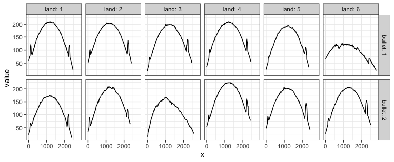
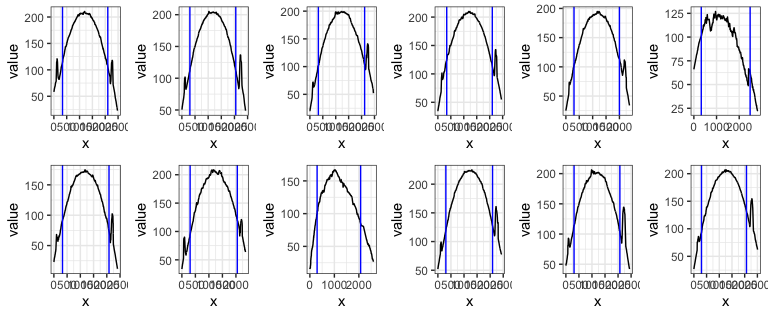
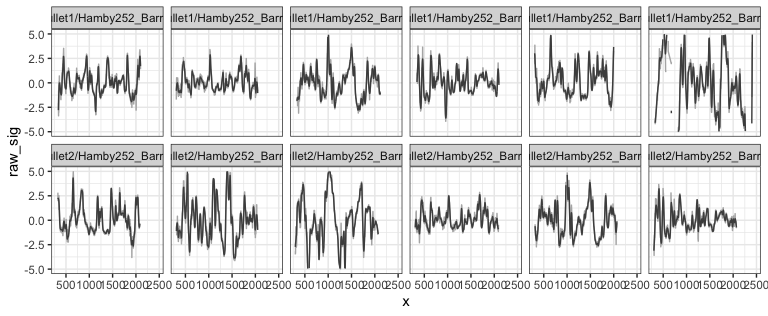
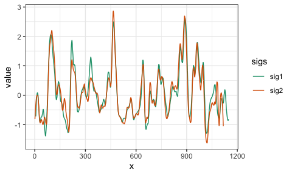
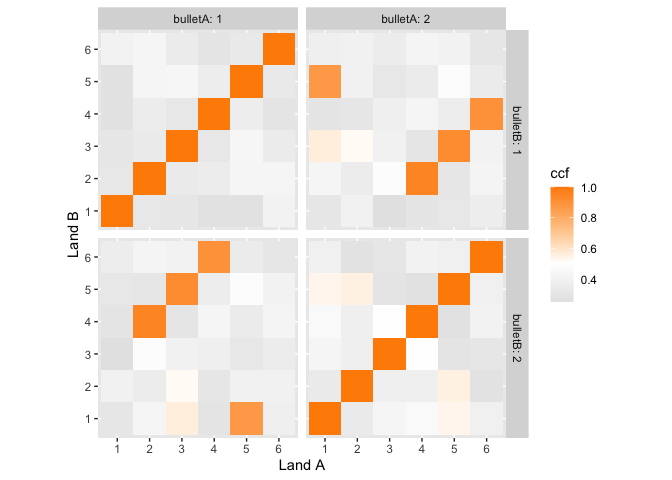
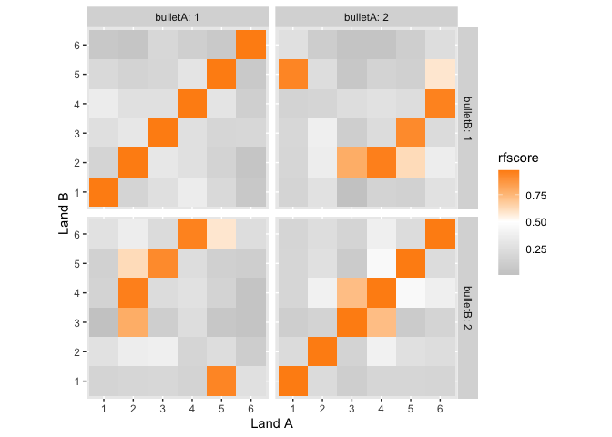
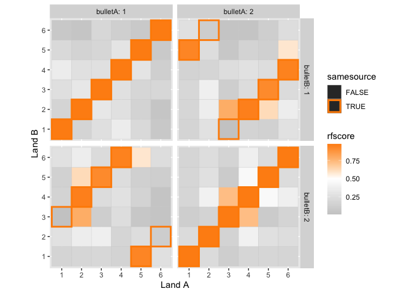

Analyze bullet striations using nonparametric methods
Installation
You can install the released version of bulletxtrctr from CRAN with:
install.packages("bulletxtrctr")And the development version from GitHub with:
# install.packages("devtools")
devtools::install_github("heike/bulletxtrctr")Comparing lands from two bullets
Striae comparisons between bullets are based on land-to-land comparisons.
- Load libraries
library(dplyr)
library(bulletxtrctr)
library(x3ptools)
library(randomForest)
library(ggplot2)
library(readr)
library(nbtrd) # devtools::install_github("csafe-isu/nbtrd")-
bulletxtrctronly works on x3p files. See packagex3ptoolsat https://heike.github.io/x3ptools/ for ways to convert different file formats into x3p standard files. The NIST Research Ballistics Toolmarks data base (NRBTD)[https://tsapps.nist.gov/NRBTD/Studies/Search] provides access to scans of bullets and cartridge cases from various case studies.
In this tutorial, we’ll work with two bullets from a single barrel of the Hamby 252 data set. Links to the 12 scans of bullet lands in x3p format are provided in the hamby252demo object.
These commands will read in the bullets directly from the NRBTD repository, without downloading the files into your working directory:
b1 <- read_bullet(urllist = hamby252demo[[1]])
b2 <- read_bullet(urllist = hamby252demo[[2]])Instead, we could also download the files into a folder named “data” in our working directory. This is shown in the sequence of commands below:
if (!dir.exists("README_files/data")) {
dir.create("README_files/data")
}
if (!file.exists("README_files/data/Bullet1/Hamby252_Barrel1_Bullet1_Land1.x3p")) {
NRBTDsample_download("README_files/data")
}
b1 <- read_bullet("README_files/data/Bullet1")
#> 6 files found. Reading ...
b2 <- read_bullet("README_files/data/Bullet2")
#> 6 files found. Reading ...Combine the results into a single data frame:
b1$bullet <- 1
b2$bullet <- 2
b1$land <- 1:6
b2$land <- 1:6
bullets <- rbind(b1, b2)We expect data to be recorded at the micron level. The scans posted give measurements in meters:
bullets$x3p[[1]] %>% x3p_get_scale()
#> [1] 1.5625e-06
summary(as.vector(bullets$x3p[[1]]$surface.matrix))
#> Min. 1st Qu. Median Mean 3rd Qu. Max. NA's
#> 0 0 0 0 0 0 24829Change measurements to microns:
bullets$x3p[[1]] %>% x3p_get_scale()
#> [1] 1.5625
summary(as.vector(bullets$x3p[[1]]$surface.matrix))
#> Min. 1st Qu. Median Mean 3rd Qu. Max. NA's
#> 1.513 117.626 166.723 155.933 199.429 216.341 24829Save resolution of the scans in a variable (we will be using this piece of information later:
resolution <- bullets$x3p[[1]] %>% x3p_get_scale()
resolution
#> [1] 1.5625We are working under the assumption that the scans are aligned such that the base of the bullet are at the bottom (y = 0) of the image, and the land engraved area is displayed left to right from groove to groove, i.e. we are assuming that (0,0) is in the bottom left corner of the image. In scans where no adjustment was made for the barrel’s twist (not recommended) the twist will be visible in the image.
image_x3p(bullets$x3p[[1]], file = "man/figures/temp-before.png")
The raw scan needs to be flipped such that the break-off region (visible on the left hand-side) is along the bottom of the image rather than along the left hand side.
# turn the scans such that (0,0) is bottom left
bullets <- bullets %>% mutate(
x3p = x3p %>% purrr::map(.f = function(x) x %>%
rotate_x3p(angle = -90) %>%
y_flip_x3p())
) Scan after the transformation: a clear right twist is visible in the right slant of striae and grooves:
image_x3p(bullets$x3p[[1]], file = "man/figures/temp-after.png")
- Get the ideal cross sections
bullets <- bullets %>% mutate(
crosscut = x3p %>% purrr::map_dbl(.f = x3p_crosscut_optimize)
)
# now extract the crosscuts
bullets <- bullets %>% mutate(
ccdata = purrr::map2(.x = x3p, .y = crosscut,
.f = x3p_crosscut)
)Visualize the cross cuts:
crosscuts <- bullets %>% tidyr::unnest(ccdata)
crosscuts %>%
ggplot(aes(x = x, y = value)) +
geom_line() +
facet_grid(bullet~land, labeller="label_both") +
theme_bw()
Note the rather strange cross cut for land 6 in bullet 1. We can look at the scan - and find quite pronounced tank rash. However, the extraction of the land is at a height of 375, which is not as much affected by the rash as the base of the bullet or the top of the scanning area.
Scan of land 6 on bullet 1. The land is affected by quite pronounced tank rash:
filter(bullets, land==6, bullet==1)$x3p[[1]] %>%
x3p_add_hline(yintercept = 375, size = 10, color = "#e6bf98") %>%
image_x3p(file="man/figures/bullet1-land6.png")
- Get the groove locations
bullets <- bullets %>% mutate(
grooves = ccdata %>%
purrr::map(.f = cc_locate_grooves, method = "middle",
adjust = 30, return_plot = TRUE)
)Visualize that the grooves are identified correctly (at least enough to not distort the final result):
gridExtra::grid.arrange(
bullets$grooves[[1]]$plot, bullets$grooves[[2]]$plot,
bullets$grooves[[3]]$plot, bullets$grooves[[4]]$plot,
bullets$grooves[[5]]$plot, bullets$grooves[[6]]$plot,
bullets$grooves[[7]]$plot, bullets$grooves[[8]]$plot,
bullets$grooves[[9]]$plot, bullets$grooves[[10]]$plot,
bullets$grooves[[11]]$plot, bullets$grooves[[12]]$plot,
ncol = 6
)
- Extract signas
bullets <- bullets %>% mutate(
sigs = purrr::map2(
.x = ccdata, .y = grooves,
.f = function(x, y) {
cc_get_signature(
ccdata = x, grooves = y, span1 = 0.75, span2 = 0.03)
})
)
signatures <- bullets %>%
select(source, sigs) %>% tidyr::unnest(sigs)
signatures %>%
filter(!is.na(sig),!is.na(raw_sig)) %>%
ggplot(aes(x = x)) +
geom_line(aes(y = raw_sig), colour = "grey70") +
geom_line(aes(y = sig), colour = "grey30") +
facet_wrap(~source, ncol = 6) +
ylim(c(-5,5)) +
theme_bw()
- Align signatures and extract features
bullets$bulletland <- paste0(bullets$bullet,"-", bullets$land)
lands <- unique(bullets$bulletland)
comparisons <- data.frame(
expand.grid(land1 = lands, land2 = lands), stringsAsFactors = FALSE)
comparisons <- comparisons %>% mutate(
aligned = purrr::map2(.x = land1, .y = land2, .f = function(xx, yy) {
land1 <- bullets$sigs[bullets$bulletland == xx][[1]]
land2 <- bullets$sigs[bullets$bulletland == yy][[1]]
land1$bullet <- "first-land"
land2$bullet <- "second-land"
sig_align(land1$sig, land2$sig)
})
)Aligned signatures of two matching lands:
subset(comparisons, land1=="2-4" & land2 =="1-2")$aligned[[1]]$lands %>%
tidyr::gather(sigs, value, sig1, sig2) %>%
ggplot(aes(x = x, y = value, colour = sigs)) +
geom_line() +
theme_bw() +
scale_color_brewer(palette = "Dark2")
#> Warning: Removed 36 rows containing missing values or values outside the scale range
#> (`geom_line()`).
Some features are based on aligned signatures:
comparisons <- comparisons %>% mutate(
ccf0 = aligned %>%
purrr::map_dbl(.f = function(x) extract_feature_ccf(x$lands)),
lag0 = aligned %>%
purrr::map_dbl(.f = function(x) extract_feature_lag(x$lands)),
D0 = aligned %>%
purrr::map_dbl(.f = function(x) extract_feature_D(x$lands)),
length0 = aligned %>%
purrr::map_dbl(.f = function(x) extract_feature_length(x$lands)),
overlap0 = aligned %>%
purrr::map_dbl(.f = function(x) extract_feature_overlap(x$lands))
)Other features need an evaluation of striation marks between two aligned signatures:
comparisons <- comparisons %>% mutate(
striae = aligned %>% purrr::map(.f = sig_cms_max, span = 75)
)
comparisons <- comparisons %>% mutate(
cms_per_mm = purrr::map2(striae, aligned, .f = function(s, a) {
extract_feature_cms_per_mm(s$lines, a$lands, resolution=resolution)
}),
matches0 = striae %>% purrr::map_dbl(.f = function(s) {
bulletxtrctr:::extract_helper_feature_n_striae(s$lines, type = "peak", match = TRUE)
}),
mismatches0 = striae %>% purrr::map_dbl(.f = function(s) {
bulletxtrctr:::extract_helper_feature_n_striae(s$lines, type = "peak", match = FALSE)
})
)
comparisons <- comparisons %>% mutate(
bulletA = gsub("([1-2])-([1-6])","\\1",land1),
bulletB = gsub("([1-2])-([1-6])","\\1",land2),
landA = gsub("([1-2])-([1-6])","\\2",land1),
landB = gsub("([1-2])-([1-6])","\\2",land2)
)- Extract Features
comparisons <- comparisons %>% mutate(
features = purrr::map2(.x = aligned, .y = striae, .f = extract_features_all, resolution = resolution)
)
comparisons <- comparisons %>% mutate(
legacy_features = purrr::map(striae, extract_features_all_legacy, resolution = resolution)
)
legacy <- comparisons %>% tidyr::unnest(legacy_features)
# scale features before using them in the random forest, legacy features can be used out of the box
features <- comparisons %>%
select(land1, land2, ccf0, bulletA, bulletB, landA, landB, features) %>%
tidyr::unnest(features)
# quick visualization:
features %>%
ggplot(aes(x = landA, y = landB, fill = ccf)) +
geom_tile() +
scale_fill_gradient2(low = "grey80", high = "darkorange",
midpoint = 0.5) +
facet_grid(bulletB~bulletA, labeller = "label_both") +
xlab("Land A") +
ylab("Land B") +
theme(aspect.ratio = 1)
- Get Score predictions for each land to land comparison
require(randomForest)
# use the scaled features, but the unscaled names ...
features <- features %>% mutate(
cms = cms_per_mm,
matches = matches_per_mm,
mismatches = mismatches_per_mm,
non_cms = non_cms_per_mm
)
features$rfscore <- predict(rtrees, newdata = features, type = "prob")[,2]
features %>%
ggplot(aes(x = landA, y = landB, fill = rfscore)) +
geom_tile() +
scale_fill_gradient2(low = "grey80", high = "darkorange",
midpoint = .5) +
facet_grid(bulletB~bulletA, labeller = "label_both") +
xlab("Land A") +
ylab("Land B") +
theme(aspect.ratio = 1)
- Determine bullet-to-bullet scores
bullet_scores <- features %>% group_by(bulletA, bulletB) %>% tidyr::nest()
bullet_scores <- bullet_scores %>% mutate(
bullet_score = data %>% purrr::map_dbl(
.f = function(d) max(compute_average_scores(land1 = d$landA, land2 = d$landB, d$rfscore)))
)
bullet_scores %>% select(-data)
#> # A tibble: 4 × 3
#> # Groups: bulletA, bulletB [4]
#> bulletA bulletB bullet_score
#> <chr> <chr> <dbl>
#> 1 1 1 0.977
#> 2 2 1 0.648
#> 3 1 2 0.648
#> 4 2 2 0.977- Use bullet-to-bullet scores to predict land to land scores
bullet_scores <- bullet_scores %>% mutate(
data = data %>% purrr::map(
.f = function(d) {
d$samesource = bullet_to_land_predict(
land1 = d$landA, land2 = d$landB,
d$rfscore, difference=0.1)
d
})
)
features <- bullet_scores %>% tidyr::unnest(data)
features %>%
ggplot(aes(x = landA, y = landB,
fill = rfscore, colour=samesource)) +
geom_tile() +
scale_fill_gradient2(low = "grey80", high = "darkorange",
midpoint = .5) +
scale_colour_manual(values = c("grey80", "darkorange")) +
geom_tile(linewidth = 1,
data = features %>% filter(samesource)) +
facet_grid(bulletB~bulletA, labeller = "label_both") +
xlab("Land A") +
ylab("Land B") +
theme(aspect.ratio = 1) 
An interactive interface for doing comparisons is available https://oaiti.org/apps/bulletmatcher/